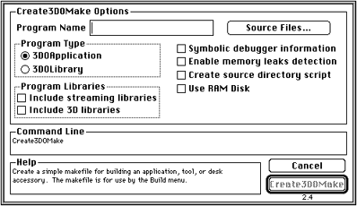
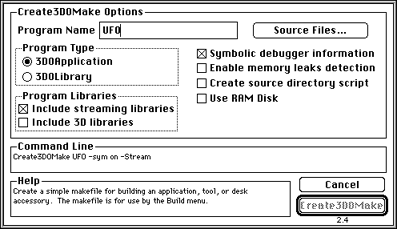

More information about the ARM compiler, linker and assembler is in 3DO
Tools for Programming III (blue cover). For optimizing your code, pay
special attention to the "ARM Cookbook" in that volume.
The Create3DOMake MPW tool creates a simple makefile for building a 3DO
program. After you've installed the 3DO software from the installation
disc and have moved the Userstartup3DO file into your MPW folder, a 3DO
menu becomes available from MPW.
When you select the Create 3DO Makefile command in the 3DO menu, a dialog
appears that lets you define the makefile. As you specify options, a
Command Line section in the dialog is filled in.
The program for which you create the makefile may be written in any
combination of Assembly Language, C, C++, or Rez. When you run the
makefile, it will copy the successfully built program to the {3DORemote}
folder. If you checked "Symbolic debugger information," the makefile also
copies the symbol file to the {3DORemote} folder.
After the tool is installed, you can use it from the command line or via
the graphical user interface as follows:
From the 3DO menu in MPW, select Create 3DO Makefile. A dialog lets you choose options for the program:

Figure 1: Create3DO Make dialog.
Provide the program name (name of the executable), for example UFO.
Click the Source Files button.
In the file selection dialog that appears, select your source files.
The program name and one source file are the only obligatory arguments.
Check the boxes for additional options as follows:
"Include streaming libraries" includes references to the DataStreamer
libraries in the makefile. Check this box if you use DataStreamer calls.
"Create source directory script," creates a .spt file that can be used
by the 3DO Debugger to find source directory information.
"Symbolic debugger information" writes a makefile that generates a
symbols file you can use for debugging source code.
Caution: The options "Include 3D libraries and "Enable memory
leaks detection" are currently not valid.
As you enter the information, the Command Line section is updated
accordingly. The illustration below shows a completed dialog box for
creating a program named UFO that includes symbolic debugging information
but none of the other options.

Figure 2: Create3DOMake example
When you've selected all desired options, choose the Create3DOMake
button and the script builds a makefile.
Note: In case of complex dependencies among header files, use the
makefile created by Create3DOMake as a starting point, then add special
dependencies in the appropriate section.
Place all source and data files and the makefile in the same folder.
From the Directory menu in MPW, choose Set Directory to set the folder
that contains the makefile and source files for the next build. If you're
currently in the directory, choose "Select Current Directory."
From the Build menu, choose Build (or Full Build).
Build rebuilds the program taking into account sources that changed.
Full Build rebuilds everything, regardless of changes.
Enter the name of the executable, as specified in the makefile, when
prompted.
MPW compiles and links the program, using the commands in the makefile. If
you're using a makefile generated by Create3DOMake, a copy of the
executable and of the .sym file-if "Symbolic debugger information" was
selected-are placed into $boot. The $boot variable evaluates to /remote or
/cd-rom.
After MPW has created the executables, you can test the program on the 3DO
system using the 3DO Debugger as your interface to the 3DO hardware. For
more information, see the 3DO Debugger Programmer's Guide in the
volume "3DO Tools for Programming I" that is part of the Toolkit
documentation set (blue cover).
If compilation does not work, you need to resolve the error messages
provided in the MPW worksheet.